قدم اول پنل ادمین · مودبورد و سه جهت
پنل ادمین رولوانا: مودبورد
پشت اتاق پروجکشن: سالن تاریک و پر است و یک نفر آرام همهی حلقهها را میبیند.
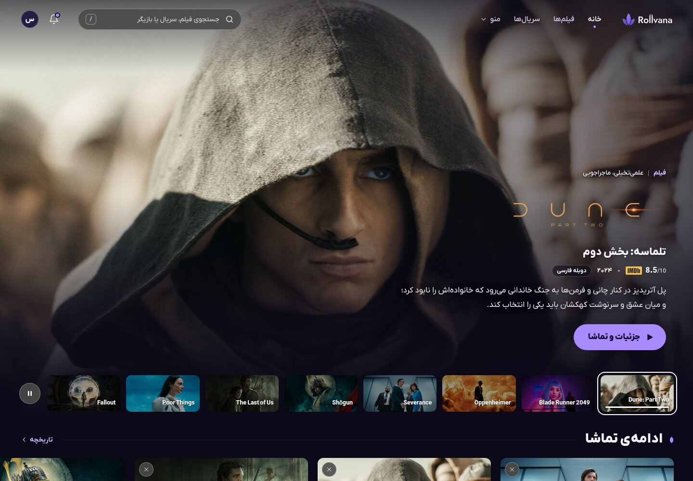
همان اتاق بنفششب و بنفشی که اکشن است؛ ادمین باید همین محصول باشد.
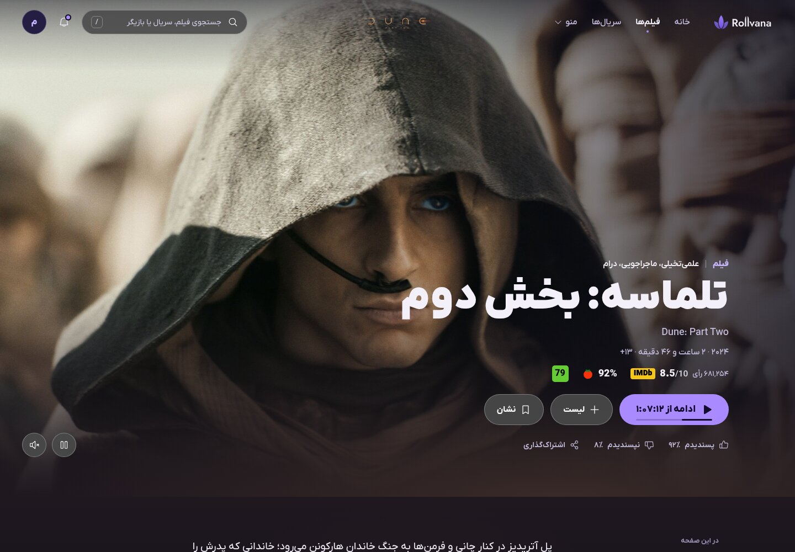
رنگ خود فیلم فقط بهصورت نور؛ تیتر یا خیلی بزرگ یا آرام.
تصویر خودش نور صفحه است؛ فقط یک اکشن روشن.
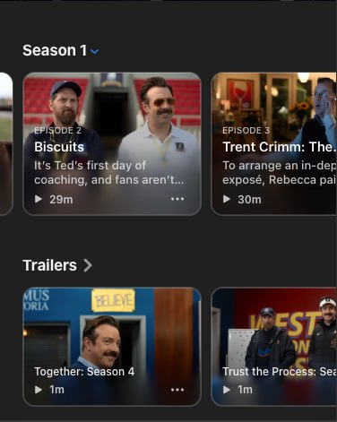
زمینهی تیرهی یکدست، کارت ۱۶:۹ با گوشهی نرم، سرتیتر کوتاه و پررنگ.
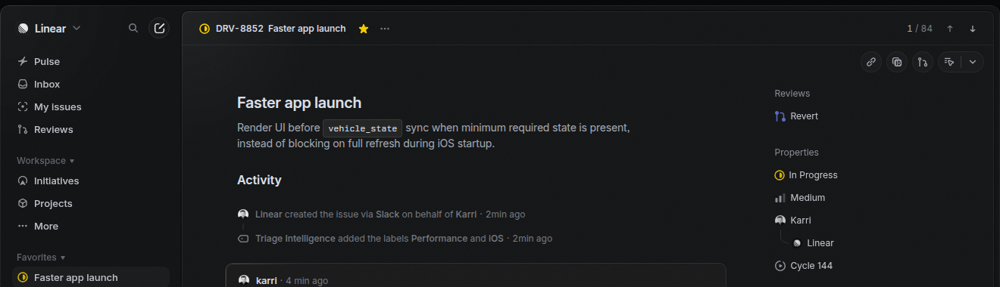
هر تغییر یک خط آرام: چه کسی، چه کرد، کی؛ بیجعبه و بیشلوغی.
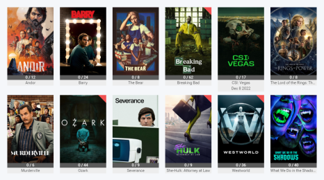
موتور محتوا را با خود پوسترها نشان بده؛ وضعیت زیر هر پوستر.
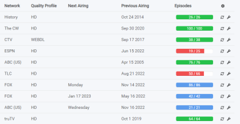
رنگ فقط برای وضعیت و همیشه با عدد؛ ستونهای تراز.

نیلوفر روی بنفش غروب؛ تنها درخشش مجاز پنل.
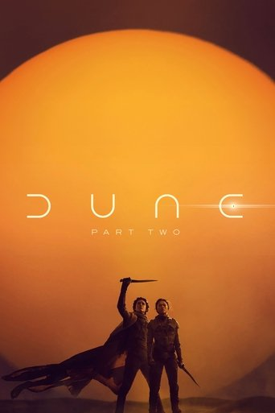
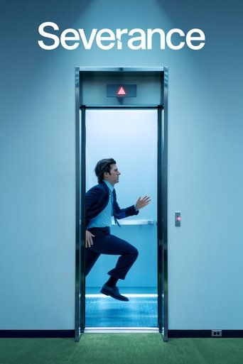
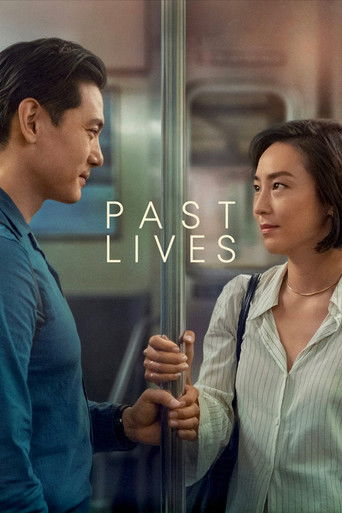

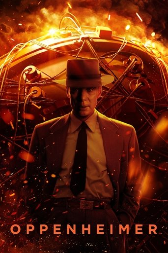
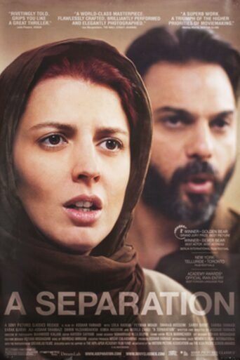

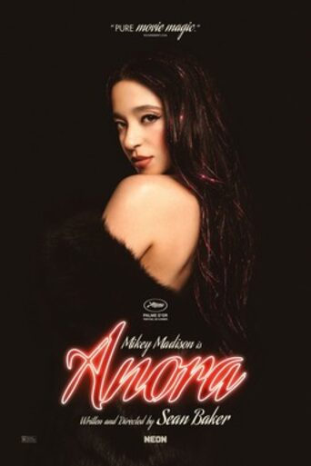
پنل با پوسترهای خود کاتالوگ حرف میزند، نه با تصویرسازی تزئینی.
اتاق بنفششب، هرگز خاکستری؛ بنفش فقط نور است و رنگهای معنا همیشه با یک کلمه.